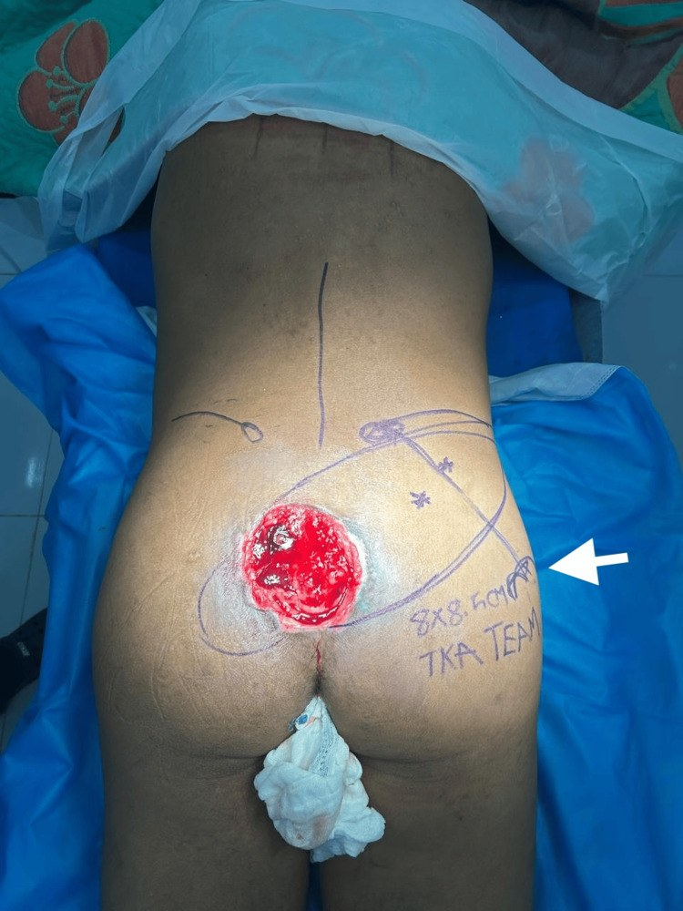
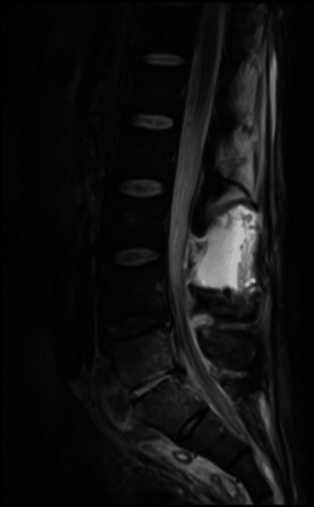
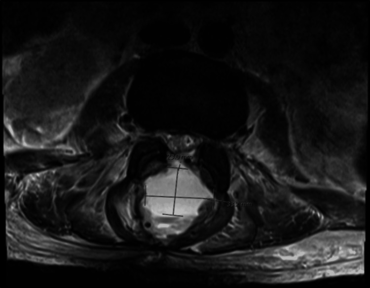
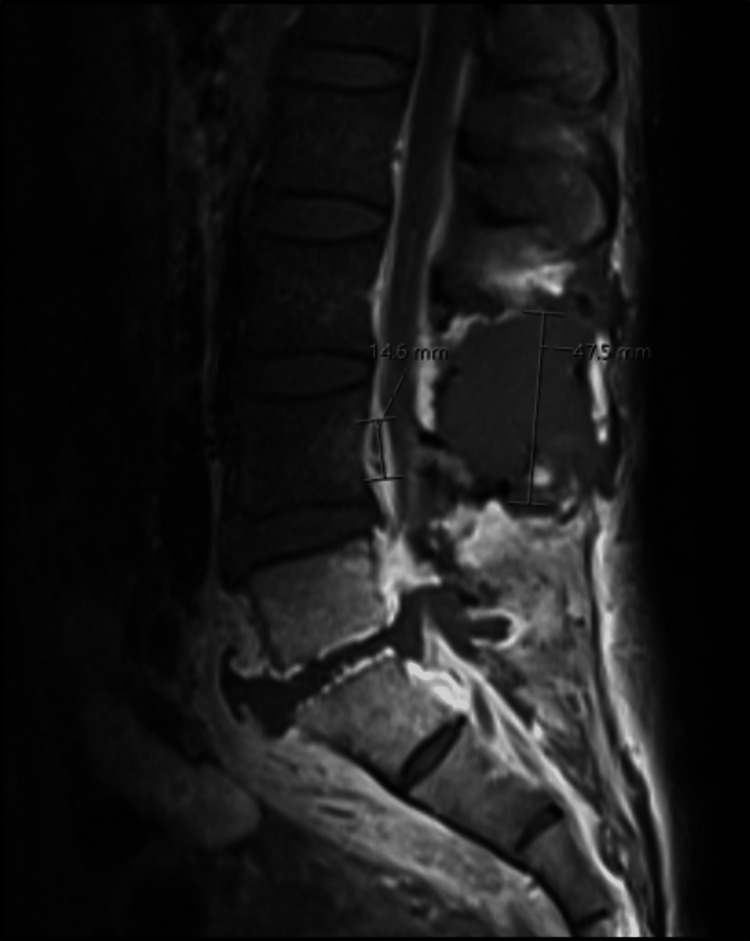

258 — Áp-xe ngoài màng cứng & nhiễm trùng ống sống do loét tì đè cùng cụt / Spinal epidural abscess complicating sacral pressure injury
Tags: pattern:ap-xe-ngoai-mang-cung pattern:viem-xuong-tuy pattern:viem-dia-dem vung:tuy-song vung:khung-chau score:ASIA protocol:MRI-tuy-co-gadolinium protocol:CT-xuong
Mức chắc chắn (certainty): tổng hợp y văn (literature synthesis) — ca nguyên văn PMC11178510 (bệnh nhân 41 tuổi, loét cùng cụt bệnh viện → viêm đĩa đệm L5–S1 + áp-xe ngoài màng cứng lan rộng, có ảnh MRI) đặt trong khung số liệu của 2 tổng quan (PMC7733760, PMC7595828) và cohort phẫu thuật (PMC7671776); ca lâm sàng lộ xương cùng dùng minh họa cửa vào (PMC13180459, ca này không có viêm xương tủy — chỉ dùng để dạy ổ loét nguồn).
Bài này nối 309 – Loét tì đè & viêm xương tủy khung chậu (ổ loét → xương) với đường lan lên ống sống: 309 dừng ở xương cùng/ụ ngồi, bài này đi tiếp vào khoang ngoài màng cứng — nơi chậm vài giờ là mất chức năng thần kinh vĩnh viễn. Cũng nối 222 – Viêm đốt sống, 250 – Lao nội tủy & lao màng tủy và 220 – Ống sống tủy.
1. Tổng quan bệnh học – cơ chế hình ảnh
- Cửa vào là ổ loét, không phải “đau lưng tuổi già”. Loét tì đè giai đoạn 3–4 có viêm xương tủy dưới loét 17–86%, đa số khoảng 20% (tổng quan 6 nghiên cứu, PMC7517666). Vùng gai cùng chỉ có lớp mô mềm mỏng che phủ, vỏ xương mỏng; vi khuẩn kỵ khí và đa vi khuẩn từ ổ loét mạn đi liên tục (contiguous) vào xương cùng → đĩa đệm L5–S1 → khoang ngoài màng cứng. Đường lây theo máu (hematogenous) chiếm 25–50%, lây liên tục khoảng 1/3 các ca (PMC11178510).
- Vì sao cùng cụt là “điểm mù”: tủy sống kết thúc ở L1–L2; dưới mức này ống sống chỉ còn đuôi ngựa (cauda equina). Áp-xe cùng cụt gây đau rễ/thần kinh tọa, yếu chi dưới, bí tiểu – đại tiện nhưng không có mức tổn thương tủy rõ ở giai đoạn đầu; khi mủ lan lên tới nón tủy mới xuất hiện mức cảm giác (ca PMC11178510: mất cảm giác dưới T8). Bệnh nhân liệt/giảm cảm giác còn không cảm thấy đau — dấu hiệu cảnh báo duy nhất có thể chỉ là sốt và chảy mủ hôi.
- TẠI SAO MRI là chuẩn — vật lý của mủ trong khoang ngoài màng cứng:
- T1W: mủ giảm hoặc đồng tín hiệu so với tủy sống; khó phân biệt với mô mềm/dịch.
- T2W: mủ tăng tín hiệu, nhưng gần bằng dịch não tủy (CSF) → trên T2 đơn thuần ổ mủ “hòa” vào CSF, dễ bỏ sót (PMC7595828).
- T1W sau gadolinium: viền xơ hóa – mô hạt ngấm thuốc dạng vòng, lòng ổ không ngấm; đây là dấu hiệu định vị và phân biệt áp-xe (ổ có vỏ) với phlegmon (ngấm lan tỏa, không vỏ).
- DWI/ADC: mủ nhớt hạn chế khuếch tán → DWI sáng, ADC tối, giúp phát hiện ổ nhỏ và phân biệt với máu tụ ngoài màng cứng (không hạn chế khuếch tán) (PMC7733760).
- Xương cùng/đĩa đệm: viêm tủy xương làm T1 giảm, STIR/T2FS tăng, ngấm thuốc; vỏ xương bị phá hủy, có thể thấy khí trong ống sống/đĩa đệm trên CT — dấu hiệu nhiễm khuẩn sinh hơi, cấp cứu.
- CT: nhanh, thấy khí, phá hủy xương, hẹp ống sống, nhưng không phân biệt được mủ với dịch/phù mô mềm và bỏ sót ổ ngoài màng cứng sớm; X-quang thường bình thường ở giai đoạn đầu.
- Vì sao chẩn đoán muộn là quy luật, không phải ngoại lệ:
- Tam chứng kinh điển (sốt + đau lưng + thiếu hụt thần kinh) chỉ gặp 8–15% (PMC7595828), khoảng 10% (PMC7733760); sốt chỉ ~25%, đau lưng 92–100%, thiếu hụt thần kinh lúc nhập viện 47% (PMC4617026).
- Chẩn đoán nhầm lần đầu 75–89% (PMC7733760).
- Điều trị bảo tồn thất bại 30–40% (PMC7733760) và 41–42,5% (PMC4617026); liệt vĩnh viễn 22%; tử vong chung 1,3–31%, các loạt gần đây 3,7–5% (PMC7595828).
- Cửa sổ hồi phục hẹp: liệt kéo dài quá 24–36 giờ khó hồi phục (PMC11178510); mổ trong 12 giờ sau nhập viện cho kết cục lâm sàng và chất lượng sống tốt hơn mổ muộn trong cohort 123 bệnh nhân (PMC7671776).

Loét tì đè cùng cụt giai đoạn IV, 11 × 9 cm, lộ xương cùng ở nam 43 tuổi liệt T11–T12; đường vẽ là quy hoạch vạt xuyên nhánh động mạch mông trên (SGAP). Ca này không có viêm xương tủy — ảnh dùng để nhận diện cửa vào và mức độ phơi xương, không phải bằng chứng nhiễm trùng ống sống. Nguồn: Zin NA et al, Cureus 2026;18(4):e107245 (PMC13180459), Fig. 1, CC BY 4.0 — ảnh nguyên bản.2. Mẫu hình + chẩn đoán phân biệt theo vị trí (gamut)
- Theo đường lan:
- Liên tục từ ổ loét cùng cụt: viêm xương cùng → viêm đĩa đệm L5–S1 → áp-xe ngoài màng cứng sau (dorsal) hoặc lan tỏa chu vi; thường đa vi khuẩn, có kỵ khí (ca PMC11178510: Bacteroides fragilis, B. pneumosintes, B. thetaiotaomicron).
- Theo máu (Batson plexus tĩnh mạch không van): ổ loét ở bất kỳ đâu cũng có thể gây áp-xe cổ/ngực — ca loét do vòng nâng tinh hoàn gây áp-xe C4–C6 và liệt tứ chi (Streptococcus intermedius, PMC6710723) là ví dụ không được bỏ qua.
- Sau thủ thuật: đặt catheter ngoài màng cứng, chọc dò, phẫu thuật cột sống — tỷ lệ rất thấp nhưng ổ nhiễm nằm ngay sau lưng, dễ nhầm đau hậu phẫu.
- Theo tầng — quyết định tốc độ nguy kịch:
- Cùng cụt – thắt lưng: hội chứng đuôi ngựa (yếu hai chi, mất cảm giác yên ngựa, bí tiểu, giảm trương lực hậu môn).
- Ngực: chèn ép tủy → mức cảm giác, liệt hai chi, rối loạn cơ tròn; nguy cơ tụt huyết áp/liệt ruột do sốc nhiễm khuẩn.
- Cổ: chèn ép tủy cổ → liệt tứ chi, suy hô hấp; nguy cơ tử vong cao nhất.
- Theo hình thái trên MRI:
- Áp-xe có vỏ: ổ dịch khu trú, viền ngấm thuốc, DWI sáng/ADC tối — có chỉ định dẫn lưu khi có chèn ép/thiếu hụt.
- Phlegmon ngoài màng cứng: ngấm thuốc lan tỏa, không vỏ, không ổ dịch rõ — có thể điều trị kháng sinh nếu không có thiếu hụt thần kinh và theo dõi sát.
- Viêm xương tủy/đĩa đệm đơn thuần: phù tủy, phá hủy đĩa–đốt sống, chưa có ổ ngoài màng cứng — vẫn phải theo dõi vì có thể tiến triển.
- Bảng gợi nhớ 4 nhóm dễ nhầm tại cùng cụt: SEA (áp-xe) – Hematoma (máu tụ) – Tumor (di căn/u) – Disc (thoát vị đĩa đệm) — “SHTD”.
- Bẫy vị trí: áp-xe sau đẩy tủy ra trước; áp-xe trước thường đi kèm viêm đĩa đệm và không gây chèn ép sớm — vì vậy không có thiếu hụt thần kinh không loại trừ áp-xe.
3. Bảng so sánh phân biệt (ma trận đối chiếu)
| Thực thể (entity) | Hình ảnh/lâm sàng điển hình | Chốt vào (rule-in) | Chốt loại (rule-out) | Gợi ý xác nhận |
|---|---|---|---|---|
| Áp-xe ngoài màng cứng (SEA) | Ổ dịch ngoài màng cứng, viền ngấm thuốc, DWI sáng/ADC tối; sốt, đau lưng, yếu chi | Viền ngấm + hạn chế khuếch tán + hội chứng nhiễm trùng | Không hạn chế khuếch tán + không ngấm + khởi phát đột ngột sau chấn thương → nghĩ máu tụ | MRI toàn bộ cột sống có/không gadolinium; cấy máu, cấy mủ |
| Máu tụ ngoài màng cứng | Khối giữ hình, tín hiệu T1/T2 thay đổi theo tuổi máu, không vỏ ngấm; đau đột ngột | Khởi phát tức thì sau gắng sức/chấn thương + dùng chống đông | Sốt + viền ngấm + DWI sáng → áp-xe (hoặc máu tụ bội nhiễm) | MRI + INR/tiểu cầu; DWI/Gd lặp lại nếu nghi bội nhiễm |
| Di căn/u ngoài màng cứng | Khối đặc, ngấm thuốc, phá hủy xương, có thể chèn ép tủy | Tiền sử ung thư + tổn thương xương + không sốt | Hạn chế khuếch tán + sốt + CRP tăng nhanh → áp-xe | MRI + staging; sinh thiết nếu chưa rõ |
| Mủ dưới màng cứng (subdural empyema) | Hình liềm dưới màng cứng, bờ mỏng, lan dọc, không có mỡ ngoài màng cứng | Viêm màng não/sau mổ + hình liềm + ngấm màng | Vị trí ngoài màng cứng, mỡ bị đẩy → áp-xe ngoài màng cứng | MRI Gd; cấy CSF (thận trọng) |
| Viêm đĩa đệm–đốt sống (không ổ dịch) | Phù tủy hai bên đĩa, ngấm đĩa–đốt sống, hẹp khe đĩa | Ngấm cả đĩa và hai thân đốt + phù tủy | Không phù xương, chỉ ổ mô mềm → áp-xe đơn thuần | MRI Gd; cấy xương/đĩa qua kim |
| Viêm xương tủy xương cùng dưới loét | Phù tủy xương cùng, phá hủy vỏ, đường rò từ loét vào xương | Lộ xương + probe-to-bone dương + phù tủy khu trú | Không phù tủy, không phá hủy vỏ → loét mô mềm đơn thuần | MRI + sinh thiết xương (mô học + cấy) |
| Thoát vị đĩa đệm gây hội chứng đuôi ngựa | Khối đĩa không ngấm thuốc, hẹp ống sống; đau sau gắng sức | Đĩa thoát vị + không hội chứng nhiễm trùng | Viền ngấm + sốt + CRP cao → áp-xe | MRI; CRP/ESR; theo dõi 6–24 giờ |
| Viêm tủy ngang (transverse myelitis) | Tăng T2 trong tủy, không khối ngoài màng cứng | Tổn thương nội tủy + khởi phát vài ngày | Khối ngoài màng cứng chèn ép → áp-xe | MRI não–tủy; CSF; loại trừ NMO/MS |

MRI cột sống thắt lưng sau tiêm thuốc tương phản (chú thích gốc: “enhanced”): ổ dịch ngoài màng cứng lớn phía sau, đẩy bao tủy ra trước, kèm thay đổi viêm đĩa đệm L5–S1. Bệnh nhân 41 tuổi, loét cùng cụt bệnh viện, sốt 39,5 °C, yếu hai chi dưới 2/5, mất cảm giác dưới T8. Nguồn: Carlson TL et al, Cureus 2024;16(5):e60379 (PMC11178510), Fig. 1, CC BY 4.0 — ảnh nguyên bản.Đọc đúng “ổ dịch trong ống sống”
- Đo ở đâu: đo chiều dài lan dọc trên lát sagittal T1 sau tiêm và chiều dày tối đa trên lát axial tại mức hẹp nhất; ghi kèm mức độ hẹp ống sống và mức chèn ép tủy/đuôi ngựa. Ca PMC11178510: ổ dịch 33 × 23 mm trên axial, 47,5 mm và 14,6 mm trên sagittal, một ổ khác 41 mm.
- Phân biệt mủ – phlegmon: chỉ gọi “áp-xe” khi có vỏ ngấm thuốc + lòng không ngấm; phlegmon là ngấm lan tỏa không vỏ, thường đáp ứng kháng sinh tốt hơn nhưng vẫn có thể tiến triển thành ổ mủ.
- Dấu hiệu “khí trong ống sống” trên CT (ca này có khí trong ống sống và đĩa đệm L5–S1) là cờ đỏ nhiễm khuẩn sinh hơi, không chờ MRI nếu bệnh nhân xấu.

Lát axial sau tiêm: ổ dịch ngoài màng cứng 33 × 23 mm (đường đo của bài gốc), chiếm gần toàn bộ ống sống sau và đẩy bao tủy ra trước. Đo chiều dày tối đa trên axial là con số quyết định mức chèn ép, không đo trên lát sagittal. Nguồn: Carlson TL et al, Cureus 2024;16(5):e60379 (PMC11178510), Fig. 2, CC BY 4.0 — ảnh nguyên bản.4. Protocol chụp + hệ phân độ/điểm chuẩn hóa
4.1 Khi nào chụp — ngưỡng không được chờ
- Bất kỳ loét tì đè giai đoạn 3–4 + một trong các dấu hiệu: sốt, đau lưng/cùng cụt mới, yếu chi mới, rối loạn tiểu tiện, mất cảm giác yên ngựa, CRP tăng không giải thích → MRI toàn bộ cột sống cấp (trong vài giờ), không chờ đáp ứng kháng sinh.
- Không có sốt không loại trừ: tam chứng chỉ 8–15%; ở người già, đái tháo đường, suy giảm miễn dịch có thể chỉ có đau và lú lẫn.
- Ổ loét “sạch” không loại trừ: ổ loét có thể đã được chăm sóc tốt trong khi mủ đã lan vào ống sống; đau tăng khi thay đổi tư thế và yếu chi mới là dấu hiệu định hướng.
4.2 Protocol MRI (tối thiểu)
- MRI là chuẩn chẩn đoán: độ nhạy và độ đặc hiệu > 90% (PMC11178510 dẫn nguồn 17; PMC7733760); gadolinium làm rõ vỏ ổ và mức lan.
- Sagittal T1W, T2W, STIR toàn bộ cột sống (cổ → cùng cụt) — không chỉ vùng đau, vì ổ có thể nhảy cóc (ở nhóm tiêm chích ma túy, tổn thương nhảy cóc khoảng 20%, PMC7595828).
- Axial T2W qua mọi tầng có bất thường trên sagittal.
- T1W sau gadolinium + fat-sat sagittal và axial: xác định vỏ ngấm, ổ dịch, viêm đĩa đệm, áp-xe mô mềm cạnh sống.
- DWI/ADC nếu có: chốt mủ, phát hiện ổ nhỏ, phân biệt máu tụ.
- Toàn bộ cột sống + não khi có sốt/lú lẫn hoặc nghi lan lên màng não (ca PMC11178510 chụp thêm não, cổ, ngực — đều bình thường, nhưng chính điều đó giúp loại ổ thứ phát).
4.3 Xét nghiệm – vi sinh (trước và trong khi chờ MRI)
- Cấy máu 2 bộ trước kháng sinh; cấy máu âm tới 40% (PMC11178510) và cấy ổ nhiễm dương 78,1–90% so với cấy máu 54,9–60% (PMC7595828) → vẫn phải lấy mủ/xương khi mổ.
- CRP, ESR, công thức máu: CRP > 10 mg/L và ESR > 30 mm/h đạt độ nhạy > 95% cho viêm nhiễm cột sống (PMC7595828), nhưng bình thường không loại trừ giai đoạn rất sớm.
- KHÔNG chọc dò tủy sống (LP) khi nghi áp-xe ngoài màng cứng: nguy cơ đưa vi khuẩn vào khoảng dưới nhện, gây viêm màng não, và dịch lấy ra có thể chính là mủ ngoài màng cứng (ca PMC11178510: 798.600 tế bào/µL, glucose 26 mg/dL, gram-negative) — kết quả này không chứng minh viêm màng não. MRI trước, rồi mới quyết định.
4.4 Phân độ ASIA và chỉ định can thiệp
- Thang ASIA (American Spinal Injury Association): A = mất hoàn toàn cảm giác và vận động dưới mức tổn thương; B = còn cảm giác, không vận động; C = vận động dưới mức nhưng < 50% cơ có lực ≥ 3/5; D = ≥ 50% cơ có lực ≥ 3/5; E = bình thường. Ghi ASIA lúc nhập viện và mỗi 4–6 giờ khi còn theo dõi bảo tồn (PMC7671776).
- Chỉ định mổ/giải ép — không có ngưỡng kích thước mm thống nhất: thiếu hụt thần kinh tiến triển, hội chứng đuôi ngựa, chèn ép tủy, áp-xe có vỏ lớn gây chèn ép, khí trong ống sống, thất bại điều trị bảo tồn (30–42,5%), mất vững cột sống. Kích thước chỉ là yếu tố tương đối — quyết định dựa trên chèn ép + thần kinh, không dựa riêng vào mm.
- Mổ sớm: cohort 123 bệnh nhân cho thấy mổ trong 12 giờ cải thiện kết cục lâm sàng và chất lượng sống so với mổ muộn (PMC7671776) — nhưng đây là nghiên cứu hồi cứu, không phải thử nghiệm ngẫu nhiên.
- Kháng sinh: khởi đầu vancomycin + phủ Gram âm (ví dụ cefepime); thêm metronidazole khi ổ loét cùng cụt/kỵ khí; tối thiểu 6 tuần, kéo dài 8–12 tuần khi có viêm xương tủy/đĩa đệm; theo CRP và cấy.
- Kiểm soát nguồn là bắt buộc: cắt lọc ổ loét, cắt xương chết, dẫn lưu kín, tránh đè lên vùng mổ; không có kiểm soát ổ loét thì kháng sinh đơn thuần thất bại.
flowchart TD
A[Loét tì đè cùng cụt giai đoạn 3-4] --> B{Sốt, đau lưng mới, yếu chi hoặc rối loạn cơ tròn?}
B -->|Không| C[Chăm sóc vết thương, giảm áp lực, dinh dưỡng, theo dõi sát]
C --> D{Xuất hiện dấu hiệu thần kinh hoặc sốt?}
D -->|Có| E
D -->|Không| F[Đánh giá lại sau 2-4 tuần]
B -->|Có| E[Cấy máu 2 bộ rồi kháng sinh kinh nghiệm + MRI toàn bộ cột sống có và không gadolinium]
E --> G{Có ổ dịch ngoài màng cứng hoặc viêm đĩa đệm?}
G -->|Không| H[Loại trừ áp-xe mô mềm, viêm tủy, hội chứng Guillain-Barré]
G -->|Có| I{Có thiếu hụt thần kinh hoặc chèn ép tủy?}
I -->|Có| J[Giải ép và dẫn lưu cấp + cắt lọc ổ loét + kháng sinh]
I -->|Không| K[Kháng sinh 6 tuần + theo dõi ASIA mỗi 4-6 giờ + CRP]
K --> L{Xấu đi về thần kinh hoặc MRI xấu?}
L -->|Có| J
L -->|Không| M[Hoàn tất kháng sinh, MRI lại trước khi ngừng]
J --> N[Phục hồi chức năng, chăm sóc vết thương, phòng tái phát]
5. Biến thể bình thường và cạm bẫy
- Không sốt, không tam chứng: chỉ 8–15% có đủ bộ ba; sốt chỉ ~25%. Không được dùng “không sốt” để trì hoãn MRI.
- Bệnh nhân liệt không đau: mất cảm giác làm đau lưng không xuất hiện; dấu hiệu sớm có thể chỉ là tăng co cứng, vã mồ hôi, thay đổi tính tình hoặc mủ hôi nhiều hơn.
- CRP bình thường: độ nhạy cao nhưng không tuyệt đối; CRP có thể còn bình thường lúc đầu. Theo dõi xu hướng, không dựa một lần.
- MRI âm sớm: trong tuần đầu, ổ mủ có thể chỉ là phlegmon hoặc thay đổi rất nhỏ; nếu lâm sàng mạnh, chụp lại sau 24–48 giờ thay vì kết luận loại trừ.
- Dương tính giả do tì đè: phù tủy xương cùng do lực tì đè mạn rất giống viêm xương tủy; trong loạt 73 vạt, PPV của MRI chỉ 84,6%, NPV 16,7% (PMC5404448, bài 309) → sinh thiết xương mới chốt.
- Chọc dò tủy sống “để chẩn đoán”: có thể chọc vào ổ mủ, làm mủ tràn vào khoảng dưới nhện, và kết quả dịch giả viêm màng não. Trong nghi áp-xe ngoài màng cứng, MRI trước, LP sau (nếu còn chỉ định).
- Máu tụ ngoài màng cứng bội nhiễm: ca PMC4352647 khởi đầu không sốt, MRI giống máu tụ, được corticoid → sốc nhiễm khuẩn và tử vong; DWI + gadolinium lặp lại là bắt buộc khi nghi ngờ. Không dùng corticoid mù ở “máu tụ” chưa loại trừ nhiễm trùng.
- Chỉ chụp cột sống thắt lưng: bỏ sót ổ ngực/cổ do lan theo màng cứng hoặc theo máu; ổ nhảy cóc gặp ở ~20% nhóm tiêm chích (PMC7595828). Chụp toàn bộ cột sống khi đã xác định một ổ.
- “Khí trong ống sống” không phải hơi ruột: trên CT, khí trong ống sống/đĩa đệm là nhiễm khuẩn sinh hơi, cần dẫn lưu cấp và kháng sinh phủ kỵ khí.
- Sau mổ: sốt lại không phải “phản ứng mổ”: ca PMC11178510 tái nhập sau 4 ngày vì nhiễm khuẩn huyết và thất bại VAC; đau tăng + CRP tăng sau mổ phải MRI lại tìm ổ tồn dư.
6. Tự lượng giá — Blind Quiz
Ca 1 — Nam 43 tuổi, liệt T11–T12 do chấn thương tủy, loét cùng cụt 3 tháng. Nhìn ảnh lâm sàng, mô tả trước khi đọc đáp án.
- Hỏi: phân độ loét? Dấu hiệu nào cho thấy xương đã phơi? Vì sao ổ loét này là cửa vào của nhiễm trùng ống sống, và khi nào phải chụp MRI cấp?
Bấm để hiện đáp án (findings + chẩn đoán)
- Findings: ổ loét cùng cụt 11 × 9 cm, đáy đỏ, lộ xương cùng; đường vẽ quy hoạch vạt SGAP. Đây là loét giai đoạn IV (mất toàn bộ lớp dày, lộ xương/gân/cơ) theo NPUAP/EPUAP.
- Vì sao là cửa vào: xương cùng vỏ mỏng, không có cơ đệm; vi khuẩn từ ổ loét đi liên tục vào xương cùng rồi đĩa đệm L5–S1 và khoang ngoài màng cứng.
- Khi nào MRI cấp: sốt, đau lưng/cùng cụt mới, yếu chi mới, bí tiểu, mất cảm giác yên ngựa, CRP tăng không giải thích — không chờ đáp ứng kháng sinh.
- Lưu ý trung thực: ca ảnh này không có viêm xương tủy; ảnh chỉ minh họa cửa vào và mức độ phơi xương, không phải bằng chứng nhiễm trùng ống sống.
- Nguồn ảnh: Zin NA et al, Cureus 2026;18(4):e107245 (PMC13180459), Fig. 1, CC BY 4.0.
Ca 2 — Nam 41 tuổi, đái tháo đường type 2, nghiện rượu; 4 ngày sau xuất viện vì loét cùng cụt bệnh viện, sốt 39,5 °C, yếu hai chi dưới 2/5, mất cảm giác dưới T8. Xem MRI.
- Hỏi: mô tả ổ dịch? Vì sao không chọc dò tủy sống? Bước tiếp theo trong 6 giờ đầu?
Bấm để hiện đáp án (findings + chẩn đoán)
- Findings: MRI sau gadolinium: áp-xe ngoài màng cứng lan rộng phía sau, đẩy bao tủy ra trước; kèm viêm đĩa đệm L5–S1, phù mô mềm cạnh sống, hẹp ống sống nặng L4–S1. Trên axial, ổ dịch 33 × 23 mm; sagittal đo 47,5 mm và 14,6 mm; một ổ khác 41 mm (Fig. 2–4).
- Chẩn đoán: áp-xe ngoài màng cứng + viêm đĩa đệm–đốt sống L5–S1 do lây liên tục từ loét cùng cụt; cấy mủ và máu mọc Bacteroides fragilis, B. pneumosintes, B. thetaiotaomicron.
- Vì sao không LP: nguy cơ đưa vi khuẩn vào khoảng dưới nhện và chọc vào ổ mủ; trong ca này LP lấy ra 798.600 tế bào/µL, glucose 26 mg/dL, gram-negative — chính là mủ ngoài màng cứng, không phải viêm màng não.
- 6 giờ đầu: cấy máu 2 bộ → kháng sinh kinh nghiệm (vancomycin + cefepime ± metronidazole) → MRI toàn bộ cột sống → hội chẩn ngoại thần kinh để giải ép + dẫn lưu và cắt lọc ổ loét.
- Nguồn ảnh: Carlson TL et al, Cureus 2024;16(5):e60379 (PMC11178510), Fig. 1, CC BY 4.0.
Ca 3 — Cùng bệnh nhân, MRI sagittal đo ổ dịch 47,5 mm và 14,6 mm; CT trước đó có khí trong ống sống và đĩa đệm L5–S1. Hỏi: vì sao phải chụp toàn bộ cột sống? Khí trong ống sống có nghĩa gì? Điều gì có thể xảy ra sau mổ?

- Hỏi: 2 con số đo được nói gì? Vì sao không dừng ở “áp-xe thắt lưng”? Sau mổ cần theo dõi gì?
Bấm để hiện đáp án (findings + chẩn đoán)
- Hai con số: ổ dịch lan 47,5 mm theo trục dọc và dày 14,6 mm — mức lan đủ để chèn ép nón tủy/đuôi ngựa, giải thích mức cảm giác T8 và yếu 2/5.
- Vì sao chụp toàn bộ: áp-xe lan dọc khoảng ngoài màng cứng và có thể nhảy cóc (ở nhóm tiêm chích ~20%); ổ ngực/cổ không triệu chứng sẽ bị bỏ sót nếu chỉ chụp thắt lưng. Ca này đã chụp não, cổ, ngực — âm tính, giúp loại ổ thứ phát.
- Khí trong ống sống: dấu hiệu nhiễm khuẩn sinh hơi (ở đây do Bacteroides), chỉ điểm cần dẫn lưu sớm và kháng sinh phủ kỵ khí, không chờ đáp ứng.
- Sau mổ: theo dõi sốt, CRP, ASIA, tình trạng vết mổ/VAC; ca này tái nhập ngày thứ 4 vì nhiễm khuẩn huyết và thất bại VAC, cần kháng sinh IV lại; MRI 2 tháng sau còn viêm mô mềm, kháng sinh kéo dài 12 tuần, và bệnh nhân đi lại được ở tháng thứ 4.
- Nguồn ảnh: Carlson TL et al, Cureus 2024;16(5):e60379 (PMC11178510), Fig. 3, CC BY 4.0.
Bài liên quan chéo
- 200 – Tổng quan Hệ Thần kinh
- 220 – Ống sống tủy: giải phẫu cắt lớp & khoang ngoài màng cứng
- 222 – Viêm đốt sống: viêm đĩa đệm–đốt sống & lao cột sống
- 250 – Lao nội tủy & lao màng tủy: dấu bia, ngấm vòng
- 228 – Thoát vị đĩa đệm thắt lưng & phân độ Pfirrmann/Modic
- 309 – Loét tì đè & viêm xương tủy vùng khung chậu ở người lớn spina bifida
- 254 – Giãn tủy sau chấn thương tủy sống: xấu đi sau giai đoạn ổn định
Ảnh
images/258_loet-cung-cut_Anh-PMC13180459-F1.jpg— loét cùng cụt giai đoạn IV lộ xương, CC BY 4.0.images/258_apxe-ngoai-mang-cung_MRI-PMC11178510-F1.jpg— MRI sagittal sau tiêm, CC BY 4.0.images/258_apxe-ngoai-mang-cung_MRI-PMC11178510-F2.jpg— MRI axial 33 × 23 mm, CC BY 4.0.images/258_apxe-ngoai-mang-cung_MRI-PMC11178510-F3.jpg— MRI sagittal đo 47,5 mm/14,6 mm, CC BY 4.0.
Nguồn và giấy phép từng ảnh: images/CREDITS.md.
Không dùng để chẩn đoán độc lập khi chưa có người hướng dẫn.